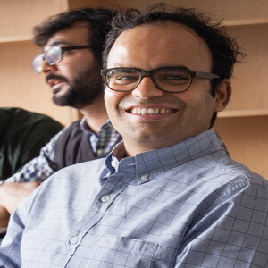
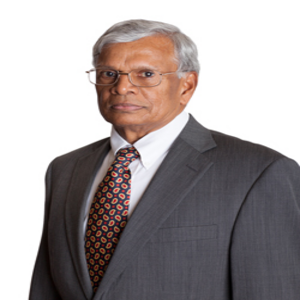

Devavrat Shah,
Professor
- His research interests are at the interface of Statistical Inference and Social Data Processing. His research focuses on statistical inference and stochastic networks. Within the broad context of networks, his work spans a range of areas across electrical engineering, computer science and operations research. His work has been recognized through prize paper awards in Machine Learning, Operations Research and Computer Science, as well as career prizes including 2010 Erlang prize from the INFORMS Applied Probability Society and 2008 ACM Sigmetrics Rising Star Award. He is a distinguished young alumni of his alma mater IIT Bombay.
- EECS, Massachusetts Institute of Technology, USA
- E-mail: devavrat
 mit.edu
mit.edu

S. Lakshmivarahan (Varahan),
Professor
- His research interests include learning algorithms, parallel and distributed processing, dynamic data assimilation, and computational sciences and finance. He is a Fellow of the IEEE, a Fellow of the ACM and has won numerous awards for both research and teaching. He has been inducted into the Oklahoma Higher Education Hall of Fame-2014. He has held short-term visiting appointments at leading academic centers in Canada, the USA, Mexico, England, Germany, India, China, and Taiwan.
- School of CS, Univ. of Oklahama
- E-mail: varahanou.edu